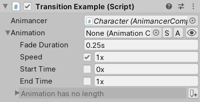

Instead of hard-coding your fade durations, start and end times, speeds, and events, it is often better to define those details in the Inspector using transitions which allow you to Preview what they will look like in Edit Mode and can be easily modified by non-programmers without needing to edit and recompile any scripts.
Each of the State types that are included in Animancer has its own Transition Type which contains various details relevant to it so that when it is passed into AnimancerComponent.Play(IAnimancerTransition) it will create that type of state. For example, a ClipState.Transition will create a ClipState to play a single AnimationClip:
| Example Script | Inspector |
|---|---|
|
 |
The Sequence Coroutine example demonstrates how to use transitions in more detail.
Fields
The following table describes the fields in a ClipState.Transition. See the Transition Types page for details about the other types.
| Name | Code | Inspector |
|---|---|---|
| Animation | Clip |
 |
|
The | ||
| Fade Duration | FadeDuration |
 |
|
The amount of time that the transition will take to Cross Fade from the previous animation to the new one. This value can not be negative and setting it to 0 sill cause the animation to Play Instantly. This Time Field is always serialized as seconds, regardless of which field you use to enter the value. | ||
| Speed | Speed |
 |
| How fast the animation will play as a multiple of its regular speed. Negative values cause it to play backwards (so you would likely want to set the Start Time to 1x so it plays backwards from the end). | ||
| Start Time | NormalizedStartTime |
 |
|
If enabled, the animation time will immediately jump to this value when played. Otherwise it will display a default value: 0x for positive speed or 1x for negative speed. If the animation is inactive ( | ||
| End Time | Events.NormalizedEndTime |
 |
|
If enabled, this value determines when the End Event will occur. It does not affect the animation playback in any way other than to trigger that event. This Time Field is always serialized as normalized time, regardless of which field you use to enter the value. | ||
| Events | Events |
 |
|
The timeline visualises the transition details:
| ||
Time Fields

Several of the above fields display a single value as two separate fields:
Xis normalized time, meaning the value is a multiple of the animation length. For example, 0.5x means halfway through the animation and 1x means at the end.Sis a fixed number of seconds. For example, 0.5s means half of a second and 1s means one whole second.
If the field has a toggle, disabling it will set the underlying value to float.NaN which has different effects depending on the field.
Previews
The icon on the right side of the Inspector for any transition opens a window which allows you to preview what it will look like so you can adjust its settings without entering Play Mode.

- Transitions only define the animation that will be played, but have no reference to the previous animation or the next animation so the Preview Settings area allows you to select which other animations you want to use.
- Those settings are only used by this window, they are not serialized as part of the transition and will have no effect on it at runtime.
- It will attempt to find all other animations referenced by the same character to list them in the
Previous AnimationandNext Animationdropdown menus, but you can always select any animation in your project using the object fields. - It will try to pick an animation with "Idle" in its name by default.
- The regular runtime Inspector is shown below that so you can view and control all the details of the preview.
- You can drag and drop any character model into the preview scene and it will try to continue previewing the transition using that character.
- The usefulness of this window may vary significantly depending on your workflow so please create a GitHub Issue if you have any feedback, suggestions, or bugs to report. See the Help page for alternate contact methods.
Context Menu
The context menu of the preview window (available via the icon in the top right of the window) contains several functions for controlling its settings:
| Function | Effect |
|---|---|
| Show Transition | If enabled, the transition being previewed will be displayed in the preview window as well as in the regular Inspector. |
| Auto Close | If enabled, the window will be automatically closed if the target transition no longer exists (such as if the object is destroyed). |